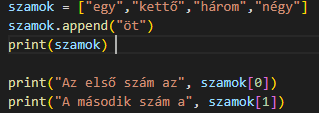

>>>>>>> 01ced88ca55876deb2490c18b2f934c25451c4d7
Listát úgy lehet létrehozni, hogy kapcsos zárójelek közé rakjuk az elemeket ([]), amiket vesszővel választunk el egymástól.
Listát úgy lehet létrehozni, hogy megadunk neki egy nevet, majd egyenlőségjel után kapcsos zárójelek közé rakjuk az elemeket ([]), amiket vesszővel választunk el egymástól.
A listák elemeinek számozása érdekesen történik, hiszen az első tagja a listának a nulladik eleme.
<<<<<<< HEAD